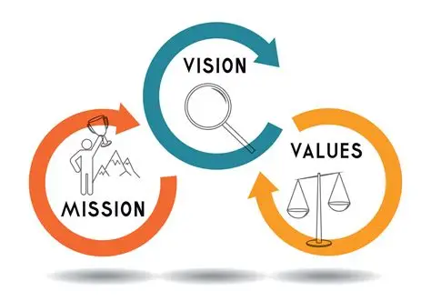

Who we are
The Department of Technology and Analytics is a centre of learning, research, and innovation within the university. We are committed to producing skilled professionals who can turn data and technology into solutions for society
Our Mission and Vision
Our mission is to deliver quality, practical education that equips students with the knowledge and confidence to excel in the digital economy. Our vision is to be a leading department recognised for excellence in technology training and analytical research.

Our Values
We value innovation, integrity, collaboration, and continuous learning. These principles guide how we teach, how we support our students, and how we engage with industry and the wider community.